In this tutorial we re-visit the solution of fluid-structure interaction problems with (pseudo-)solid fluid mesh updates, focusing on the efficient solution of the governing equations by GMRES, using the problem-specific block-preconditioner developed in
where full details of the analysis and further results from a variety of other test problems can be found.
Background: Problem formulation, the resulting linear system and the preconditioner
We will demonstrate the development and application of the preconditioner using the problem of flow in a 2D channel with an elastic leaflet discussed in another tutorial and illustrated in the sketch below:

Flow is driven (via an imposed parabolic inflow profile) through a 2D channel which is partially obstructed by a thin-walled elastic leaflet. The fluid leaves the domain at the far downstream end of the channel where we assume parallel, axially traction-free outflow.
We use the same discretisation (2D quadrilateral Taylor-Hood elements for the fluid; 1D Hermite beam elements for the leaflet) as in the original tutorial. However, here we perform the fluid mesh update in response to the deformation of the elastic leaflet using a pseudo-elastic approach. This is done by "wrapping" the underlying QTaylorHoodElement into a PseudoSolidNodeUpdateElement and employing ImposeDisplacementByLagrangeMultiplierElements to impose the deformation of the elastic leaflet onto the (pseudo-solid) fluid mesh. The following tutorials discuss the relevant methodologies:
- The use of Lagrange multipliers to impose displacement constraints onto (pseudo-)solids.
- The use of pseudo-elasticity to deform the fluid mesh in FSI problems.
The discretised problem contains the following types of discrete unknowns:
- The fluid degrees of freedom (velocities and pressures).
- The nodal positions (real and generalised; the latter representing derivative degrees of freedom in the Hermite elements used to discretise the leaflet; see the beam theory tutorial for details) of the elastic leaflet.
- The nodal positions in the fluid mesh.
- The nodal values representing the components of the (vector-valued) Lagrange multipliers which impose the motion of the elastic leaflet on the pseudo-elastic fluid mesh. These unknowns only exist for the fluid nodes on the FSI boundary.
Using this classification of the unknowns, the linear system to be solved in the course of the Newton iteration can be re-ordered into the following block structure:
![\[
J_{\rm FSI} \ \Delta {\bf x} =
\left[
\begin{array}{c|c|cc}
F& &C_{\rm fx}&\\ \hline C_{\rm sf}&S&C_{\rm sx}&\\ \hline
&&E&C_{\rm xl}\\ &C_{\rm ls}&C_{\rm lx}&\\
\end{array}
\right] \left[
\begin{array}{c}
\Delta {\bf F}\\
\hline \Delta {\bf S}\\
\hline \Delta {\bf X}\\
\Delta {\bf L}\\
\end{array}
\right] =- \left[
\begin{array}{c}
{\bf r}_{\rm f}\\
\hline {\bf r}_{\rm s}\\
\hline {\bf r}_{\rm x}\\
{\bf r}_{\rm l}\\
\end{array}
\right]
\ \ \ \ \ \ \ \ (1)
\]](form_0.png)
where the vector  contains the Navier-Stokes (fluid) unknowns (velocities and pressure), 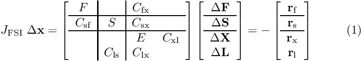 represents unknowns describing the deformation of the fluid-loaded solid, 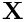 represents the nodal positions in the fluid mesh, and 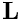 contains the discrete Lagrange multipliers which impose the deformation of the FSI boundary in the fluid mesh. The three diagonal blocks in the Jacobian matrix, 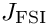, are the two `‘single-physics’' Jacobian matrices ( 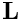, the Navier-Stokes Jacobian; 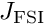, the tangent stiffness matrix of the fluid-loaded solid) and the Jacobian,
contains the Navier-Stokes (fluid) unknowns (velocities and pressure), 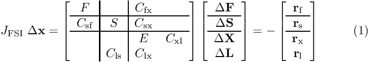 represents unknowns describing the deformation of the fluid-loaded solid, 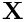 represents the nodal positions in the fluid mesh, and 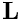 contains the discrete Lagrange multipliers which impose the deformation of the FSI boundary in the fluid mesh. The three diagonal blocks in the Jacobian matrix, 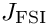, are the two `‘single-physics’' Jacobian matrices ( 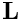, the Navier-Stokes Jacobian; 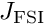, the tangent stiffness matrix of the fluid-loaded solid) and the Jacobian,
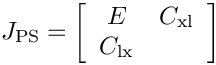
associated with the Lagrange-multiplier-constrained pseudo-elasticity problem governing the fluid mesh update, discussed in more detail in another tutorial. The non-zero off-diagonal blocks arise through the interactions between the various single-physics problems: 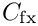 represents the effect of the pseudo-solid unknowns (the nodal positions in the fluid mesh) on the discretised Navier–Stokes equations – this incorporates the so-called shape-derivatives and the time-discretised version of the no-slip condition on the FSI boundary which expresses the fluid velocities in terms of the nodal velocities of the fluid mesh. 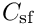 captures the effect of the fluid traction (pressure and shear stresses) on the fluid-loaded solid. Since the shear stresses depend on gradients of the fluid velocity, the traction is also affected by the nodal positions in the fluid mesh – this dependency gives rise to the matrix 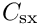. Finally,  arises because the prescribed boundary displacement of the fluid mesh depends on the displacement field in the fluid-loaded solid. The zero 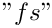 block reflects the fact that the discretised Navier-Stokes equations do not depend directly on the displacement field of the actual solid. The zero 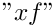 block indicates that the pseudo-solid equations are not affected by the fluid unknowns. The 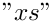 block is zero because the real solid affects the pseudo-solid only indirectly via the Lagrange multiplier constraint (which gives rise to ). Finally, the non-zero blocks in the last block column reflect the fact that the Lagrange multiplier is only used to enforce the displacement constraint in a one-way coupling in which the real solid affects the pseudo-solid but not vice versa. See Muddle, Mihajlovic & Heil (2012) for more detail.
arises because the prescribed boundary displacement of the fluid mesh depends on the displacement field in the fluid-loaded solid. The zero 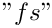 block reflects the fact that the discretised Navier-Stokes equations do not depend directly on the displacement field of the actual solid. The zero 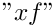 block indicates that the pseudo-solid equations are not affected by the fluid unknowns. The 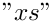 block is zero because the real solid affects the pseudo-solid only indirectly via the Lagrange multiplier constraint (which gives rise to ). Finally, the non-zero blocks in the last block column reflect the fact that the Lagrange multiplier is only used to enforce the displacement constraint in a one-way coupling in which the real solid affects the pseudo-solid but not vice versa. See Muddle, Mihajlovic & Heil (2012) for more detail.
To construct a preconditioner for the linear system (1) we replace the bottom-right 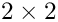 block in the Jacobian with the pseudo-solid preconditioner,
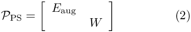
which we discussed in another tutorial. This yields the pseudo-solid FSI preconditioner
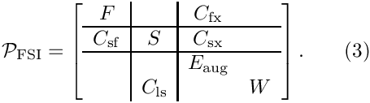
The preconditioner can be shown to have a block triangular structure. Its application therefore requires the solution of four subsidiary linear systems involving the matrices , , 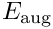 and 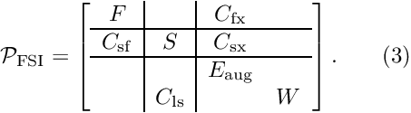 and four sparse matrix-vector products with the interaction matrices , , and 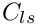.
Numerical experiments in Muddle, Mihajlovic & Heil (2012) show that an efficient implementation of the preconditioner is obtained by
- replacing the solution of the linear system involving
 by the approximation 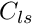 discussed in another tutorial,
by the approximation 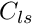 discussed in another tutorial,
- replacing the solution of the linear system involving the Navier-Stokes Jacobian 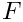 by an application of Elman, Silvester and Wathen's Least-Squares Commutator (LSC) preconditioner,
and by replacing the remaining block-solves within these preconditioners by a small number of AMG cycles or CG iterations. We retain SuperLU as the (exact) direct solver for the linear system involving the real solid's tangent stiffness matrix  .
.
With these approximations, the computational cost of one application of the preconditioner is linear in the number of unknowns (see Comments and Exercises for a more detailed discussion of this issue). The optimality of the preconditioner can therefore be assessed by demonstrating that the number of GMRES iterations remains constant under mesh refinement.
Implementation and use of the preconditioner
The preconditioner described above is implemented within oomph-lib's (parallel) block preconditioning framework which is described in another tutorial. For the purpose of the implementation, we decompose the preconditioning matrix into the 3x3 main blocks indicated by the vertical and horizontal lines in (1) and (3).
The degrees of freedom within these sub-blocks are classified into "dof-types" on an element-by-element basis, using the functions
GeneralisedElement::ndof_types(...)which returns the number of dof types classified by that element.GeneralisedElement::get_block_numbers_for_unknowns(...)which associates each degree of freedom (identified by its global equation number) with the dof type within its block.
The default implementation of these functions within the Navier-Stokes elements (which differentiate between the fluid velocity components and the pressure) and the beam elements (which do not distinguish between the different types of degree of freedom) is appropriate for the use with the (subsidiary) preconditioners employed here. The degrees of freedom representing the nodal positions in the (pseudo-solid) fluid mesh need to be sub-divided into those that are and are not constrained by the Lagrange multipliers that impose the deformation of the FSI boundary. This is most conveniently done by overloading the relevant functions in a templated wrapper element, PseudoElasticBulkElement<...>,
as discussed in another tutorial.
Results
We examine the performance of the preconditioner in steady and unsteady test problems. First we perform a sequence of steady solves, incrementing the Reynolds number in steps of 25. The final steady solution is then used as the initial condition for an unsteady simulation in which the inflow is subjected to a time-periodic oscillation. The tables below show the GMRES iteration counts (averaged over all linear solves performed in the course of all Newton iterations) as a function of the mesh refinement (represented by the total number of unknowns) for different implementations of the preconditioner.
n_dof | 9570 | 38724 | 87462 | 155784 |
| GMRES (blocks solved by SuperLU) | 5.88889 | 5.88889 | 5.88889 | 6.11111 |
| GMRES (LSC; blocks solved by SuperLU) | 27.8889 | 36.1111 | 42.3333 | 47.2222 |
| GMRES (LSC; pseudo-solid; blocks solved by Hypre/CG) | 37.3333 | 43.2222 | 49.3333 | 55.3333 |
Average GMRES iteration counts (unsteady runs)
n_dof | 9570 | 38724 | 87462 | 155784 |
| GMRES (blocks solved by SuperLU) | 6.5124 | 6.95868 | 7.15323 | 7.2619 |
| GMRES (LSC; blocks solved by SuperLU) | 15 | 15.9256 | 16.2097 | 16.6429 |
| GMRES (LSC; pseudo-solid; blocks solved by Hypre/CG) | 22.2066 | 25.3967 | 27.0484 | 27.9921 |
As expected from the theory (see Muddle, Mihajlovic & Heil (2012)), the GMRES iteration counts are small and virtually mesh independent for the exact implementation of the preconditioner. Replacing the (costly) exact solves by (faster) approximate solves leads to a modest increase in the (absolute) number of GMRES iterations. The most significant deterioration of the iteration counts results from the use of the LSC Navier Stokes preconditioner as the inexact solver (subsidiary preconditioner) for the Navier-Stokes block. The behaviour observed here (slight mesh dependence for steady solves; virtual mesh independence (once the mesh is sufficiently fine) for unsteady solves) mirrors that observed in single-physics Navier-Stokes problems.
The benefit of switching to the approximate solves becomes apparent in the next two tables which shows the average cpu times required for the solution of the linear systems by GMRES. (For comparison the times labelled as "SuperLU" show the times when the linear systems (1) are solved directly by SuperLU rather than by GMRES; they illustrate how quickly direct solvers become uncompetitive.) For sufficiently fine discretisations the larger number of GMRES iterations for the inexact solves is more than compensated for by the much lower cost of the preconditioning operations. The final implementation yields cpu times that (at least for unsteady problems) are proportional to the number of unknowns – the hallmark of an optimal solver.
n_dof | 9570 | 38724 | 87462 | 155784 |
| SuperLU | 2.71863 | 33.7939 | 129.248 | 325.384 |
| GMRES (blocks solved by SuperLU) | 2.31567 | 15.1042 | 58.5491 | 147.531 |
| GMRES (LSC; blocks solved by SuperLU) | 2.8051 | 18.3197 | 58.7335 | 138.558 |
| GMRES (LSC; pseudo-solid; blocks solved by Hypre/CG) | 3.47733 | 15.1812 | 37.6856 | 73.0526 |
Average linear solver times (unsteady runs; sec)
n_dof | 9570 | 38724 | 87462 | 155784 |
| SuperLU | 2.06807 | 25.7064 | 99.7166 | 248.082 |
| GMRES (blocks solved by SuperLU) | 1.73668 | 11.1679 | 42.2051 | 105.97 |
| GMRES (LSC; blocks solved by SuperLU) | 1.87403 | 11.0113 | 34.2697 | 81.4382 |
| GMRES (LSC; pseudo-solid; blocks solved by Hypre/CG) | 2.26537 | 9.40194 | 22.5644 | 41.8251 |
Modifications to the driver code
Most of the driver code is unchanged from the implementation discussed in the original tutorial. We therefore only discuss the modifications required
- to perform the fluid mesh update using (pseudo-)elasticity,
and
- to employ preconditioned GMRES as the linear solver in the Newton method.
Fluid-mesh udate by pseudo-elasticity
To perform the node update in the fluid mesh in response to the deformation of the leaflet using the equations of large-displacement elasticity we "wrap" the Navier-Stokes element in the doubly-templated PseudoSolidNodeUpdateElement<WRAPPED_ELEMENT, SOLID_ELEMENT> class. The first template argument of this class, WRAPPED_ELEMENT, specifies the type of the "wrapped" element – here the nine-node, 2D quadrilateral QTaylorHoodElement<2>. The second template argument, SOLID_ELEMENT, specifies the SolidElement used to perform the node update – here the nine-node, 2D quadrilateral QPVDElement<2,3>. Since the preconditioner requires the (re-)classification of the pseudo-solid degrees of freedom into constrained and unconstrained nodal positions, we wrap this element too, using the PseudoElasticBulkElement already discussed in another tutorial. The full specification of the fluid element is therefore given by
Modifications to the main code
The main code only requires minor changes, all associated with the specification of different solver options. Since we provide the option to use Hypre and Trilinos solvers, we need to activate MPI if oomph-lib has been compiled with MPI support (even if the code is run in serial):
Next we define and process the possible command line flags which are used to select solver options and to specify the spatial resolution
We then assign the command line flags that were specified and document the ones that were recognised, before building the problem, specifying the heavily wrapped version of the Navier-Stokes element as the template parameter.
The rest of the main code is very similar to the original version discussed in another tutorial and is therefore omitted here.
Choosing the iterative solver and preconditioner
We provide a new function, set_iterative_solver() to switch the solver to GMRES and to instantiate the FSI preconditioner. We start by creating the GMRES solver, using Trilinos' implementation if it is available:
Next, we create an instance of the FSI preconditioner for a 2D problem and pass it to the solver:
The classification of the degrees of freedom within the block preconditioning framework requires the specification of the (pseudo-solid) fluid mesh, the "real" solid mesh and the mesh containing the Lagrange multiplier elements that impose the deformation of the FSI boundary in the fluid mesh:
We provide the option to bypass the use of the LSC Schur complement preconditioner as the subsidiary preconditioner (inexact solver) for the Navier-Stokes block:
By default the preconditioner performs the preconditioning operations as described above, using SuperLU for the block solves in (3). It is possible to specify alternative (approximate) solvers for these. For instance, the behaviour of the LSC preconditioner can be modified by following the pointer to the Schur complement preconditioner
whose behaviour can be modified as discussed in LSC preconditioner tutorial. For instance, to use a block-triangular approximation for the Navier-Stokes momentum block we specify
If Hypre is available, we can then (approximately) solve the diagonal blocks using a small number of AMG V-cycles (with settings specified in the helper function LSC_Preconditioner_Helper::set_hypre_preconditioner):
Similarly, we can use Hypre (with settings appropriate for a 2D Poisson problem) to approximately solve the pressure Poisson systems in the computations of the Schur complement approximation:
Approximate solvers for the diagonal blocks in the preconditioner (2) for the the Lagrange-multiplier constrained pseudo-elastic equations can be chosen as discussed in another tutorial. For instance, we can employ a block-upper triangular approximation for the augmented pseudo-elastic block :
Its diagonal blocks can then again be solved by Hypre,
Similarly, the linear systems involving the mass matrices in 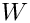 can be solved using diagonally preconditioned CG:
Comments and Exercises
Comments
- Further details of the theory, such as the proof of the optimality of the preconditioner, can be found in Muddle, Mihajlovic & Heil (2012).
- Note that we retained SuperLU as the solver for the linear system involving the tangent stiffness matrix of the actual, fluid-load solid. In the present example this still leads to an optimal solver since the leaflet is modelled as a 1D beam structure whose number of unknowns increases much more slowly than the number of unknowns in the fluid mesh when the meshes are refined uniformly. If the solid is modelled as a "proper" solid, the use of a direct solver for the solution of the linear systems involving becomes sub-optimal. The member function can then be used to specify a subsidiary preconditioner (inexact solver) for the linear systems involvingPseudoElasticFSIPreconditioner::set_solid_preconditioner(...).
Exercises
- Experiment with different preconditioner settings and explore the performance of the preconditioner at different Reynolds numbers. The script
run.shused to generate the data presented above, may be helpful.
Source files for this tutorial
- The source files for this tutorial are located in the directory:
demo_drivers/interaction/pseudo_solid_fsi_channel_with_leaflet
- The driver code is:
demo_drivers/interaction/pseudo_solid_fsi_channel_with_leaflet/fsi_channel_with_leaflet_precond.cc
PDF file
A pdf version of this document is available. \